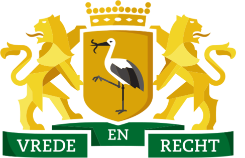
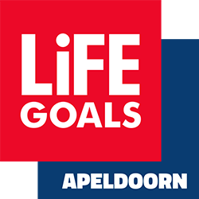
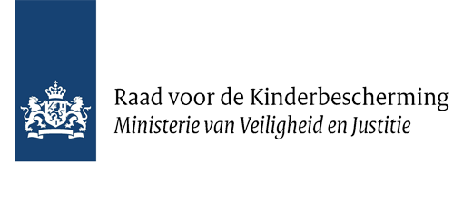

Sponsors en partners
Wilt u onze vereniging sponsoren? Neem dan contact op om de mogelijkheden te bespreken.
Gemeente Den Haag:
De Gemeente Den Haag is de lokale overheid in de stad Den Haag, Nederland. Als bestuursorgaan is de gemeente verantwoordelijk voor het welzijn van haar inwoners. Dit omvat diverse taken, zoals stadsplanning, openbare diensten, onderwijs en sociale voorzieningen. De gemeente speelt een cruciale rol in het aanbieden van gemeenschapsgerichte programma's en initiatieven ter bevordering van sociale cohesie en de kwaliteit van leven voor haar burgers.
Life Goals:
Life Goals is een organisatie die zich richt op het verbeteren van het leven van kwetsbare mensen door middel van sport en beweging. Ze werken samen met verschillende partners, waaronder zorginstellingen, lokale overheden en sportorganisaties, om programma's te ontwikkelen die sociale inclusie, persoonlijke ontwikkeling en herstel bevorderen. Life Goals gebruikt sport als een krachtig middel om mensen te helpen hun zelfvertrouwen op te bouwen en weer deel te nemen aan de samenleving, ongeacht hun achtergrond of uitdagingen.
Reclassering Nederland:
Reclassering Nederland is een organisatie die gespecialiseerd is in begeleiding en toezicht van personen die in aanraking zijn gekomen met het strafrechtelijke systeem. De reclassering richt zich op het voorkomen van recidive door middel van begeleiding, advies en toezicht. Ze werken samen met justitie, rechtbanken en andere partners om effectieve rehabilitatieprogramma's te bieden en te streven naar een succesvolle re-integratie van individuen in de samenleving.
Raad voor de kinderbescherming:
De Raad voor de Kinderbescherming is een Nederlandse overheidsinstantie die zich inzet voor de belangen en bescherming van minderjarigen. De raad intervenieert in situaties waar de veiligheid of ontwikkeling van een kind in het geding is. Dit kan variëren van familierechtelijke kwesties tot situaties van kindermishandeling of verwaarlozing. De raad doet onderzoek en adviseert de rechtbank over passende maatregelen ter bescherming van het kind.